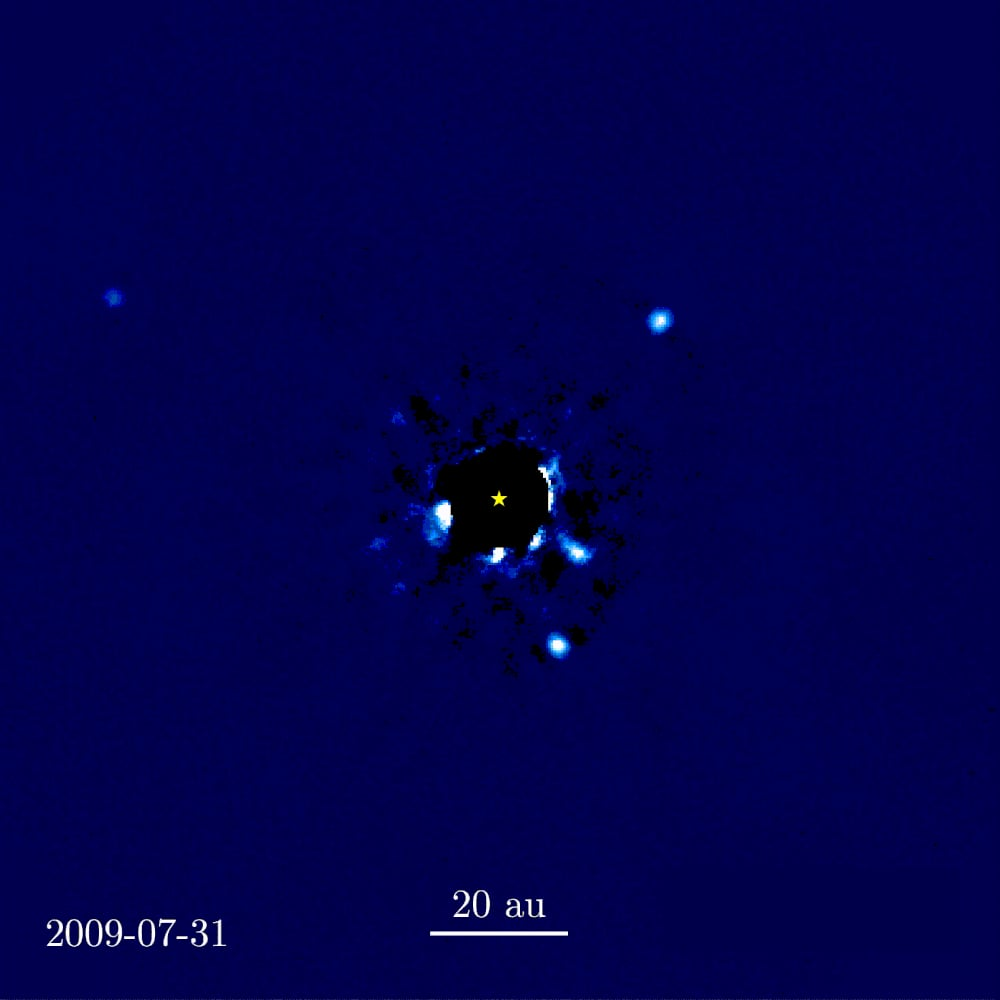

Coronagraphs
An occulting disc inside the telescope blocks the host star so the planet next to it — a billion times fainter — becomes visible.
A Sun-like star outshines its planets by a factor of about 10⁹ at visible wavelengths and 10⁶ in the infrared. The planet's photons aren't missing — they're drowning in the diffraction wings of the star's point-spread function. Direct imaging of an exoplanet is only possible if you can suppress that PSF by many orders of magnitude. A coronagraph does exactly that.
The classical Lyot coronagraph (1930, invented by Bernard Lyot for solar photography) places an opaque disc at the telescope's focal plane to block the star, then a second mask further down to block the diffracted light from the first mask's edge. Modern apodised pupil coronagraphs and vortex coronagraphs use intricate phase patterns to push the suppression to 10⁻⁹ or better in narrow regions of the image.
JWST carries coronagraphs on both NIRCam and MIRI; they've directly imaged several gas giant exoplanets around nearby stars. The Nancy Grace Roman telescope (launching mid-2020s) carries a coronagraph instrument designed to image gas giants around bright stars at unprecedented contrast — and to demonstrate the technology for the larger Habitable Worlds Observatory, which will aim at Earth-mass planets.
An alternative architecture is the **starshade**: a 30+ metre opaque shape flown thousands of km in front of the telescope, blocking the star without any optics inside the instrument. Starshades are mechanically harder (the formation-flying alignment is brutal) but reach higher contrast. None has flown yet; concept studies for direct Earth-twin imaging always include a starshade in the mix.
